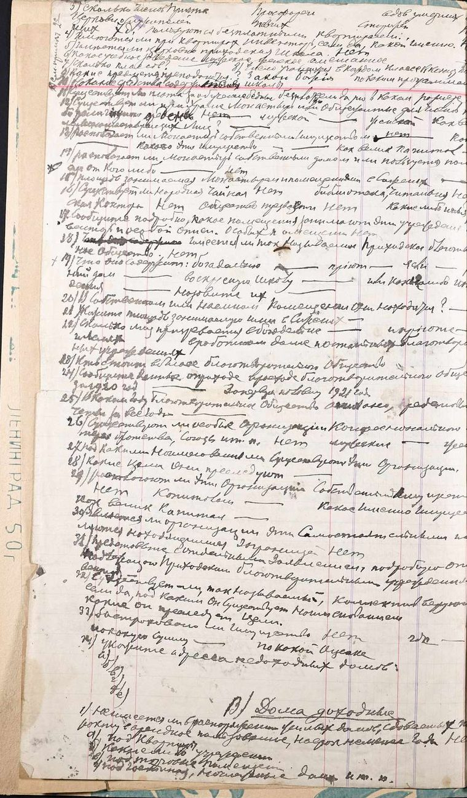
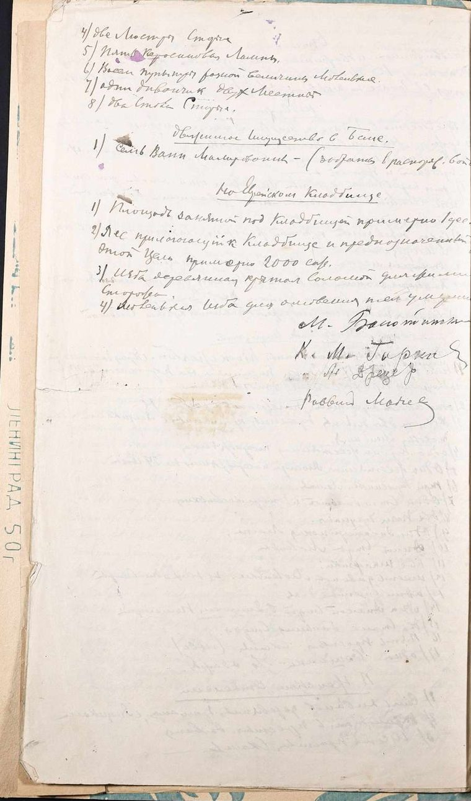
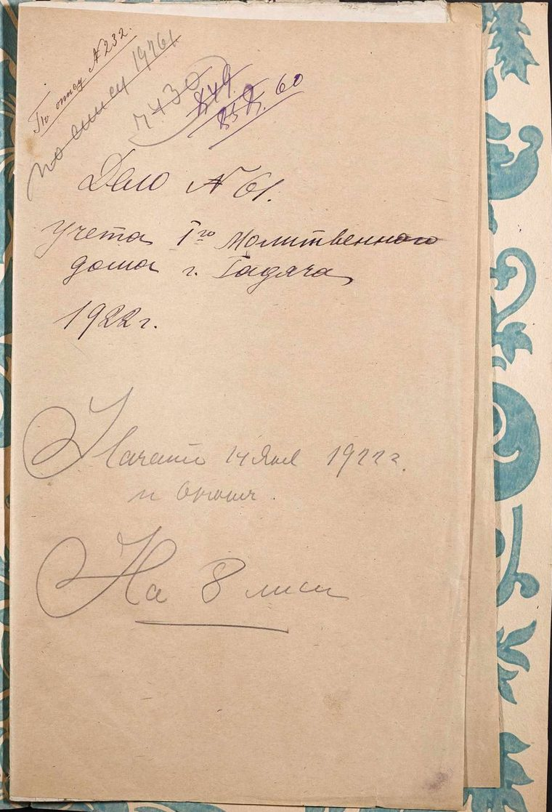
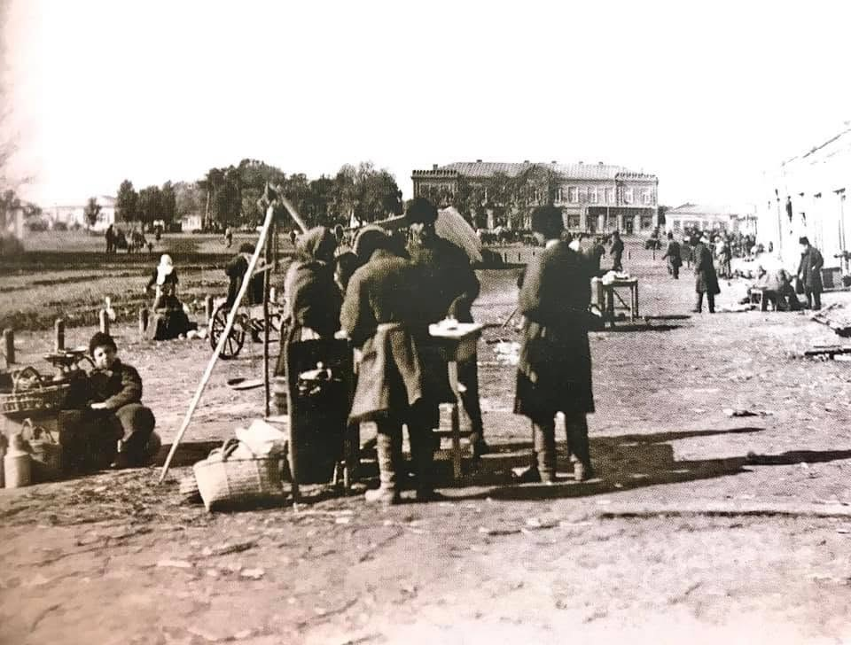
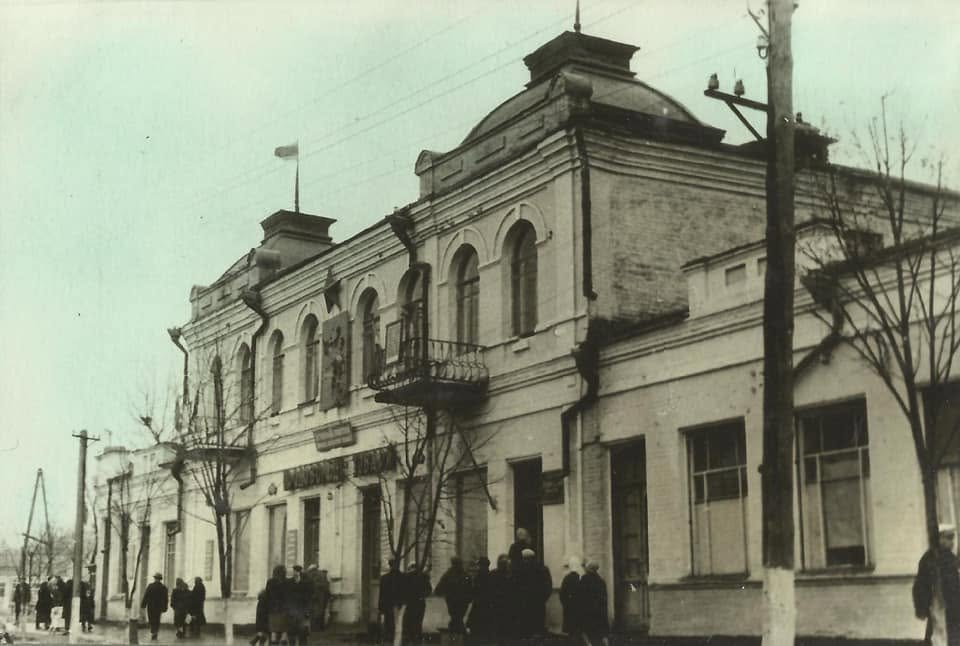
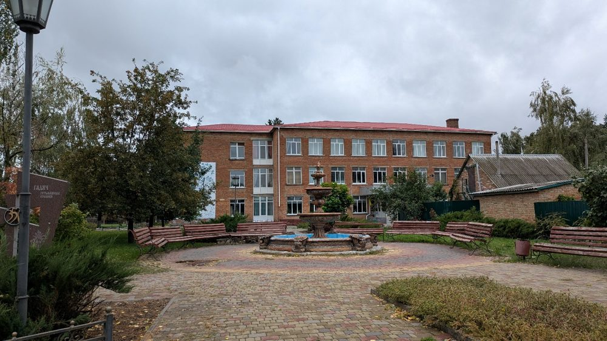
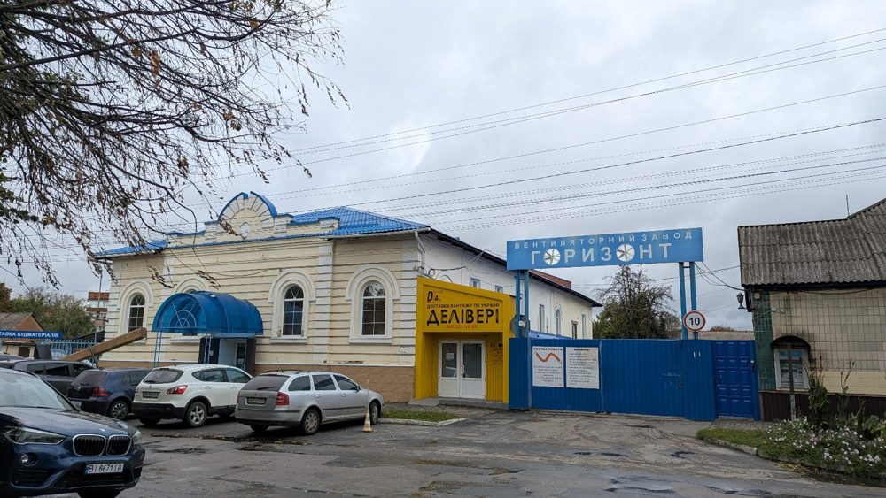

Розгорнута концепція
Слухати концепцію0:00
Українською · озвучено ШІ-голосом
Дослідження єврейської спадщини Гадяча через архіви, історії та місця пам’яті. За допомогою цифрового мистецтва невидимі сліди минулого повертаються в сучасний простір міста.
Почати маршрутАрхів / Гадяч / ХХ століття / Шари
Ці фотографії зберегли Гадяч різних десятиліть: Соборну площу, вулиці, крамниці й людей. Хто з них належав до єврейської громади, на знімках здебільшого не прочитати — місто постає як спільне повсякдення, де різні громади жили поруч.
Кадри ожили: за допомогою ШІ рух людей, тіні й вітер у деревах повторюються в циклі, як пам’ять, що повертається. Натисніть паузу — і побачите оригінал фото таким, яким його зберіг архів.



Документи: Державний архів Полтавської області, ф. Р-3257, оп. 1, спр. 332 (1922) — «Документи (заява, листування, договори, описи майна) щодо передавання Гадяцьким повітовим виконавчим комітетом майна першого молитовного будинку міста Гадяча вірянам», зобр. 2, 5, 7. е-ресурс ДАПО ↗
AR-маршрут історичними місцями міста: сім локацій, 1,4 км пішки. Мапа стоїть на першій локації — клікніть по вулиці, і вона поїде до наступної, аж до останньої точки. Наведіть на номер, щоб побачити об’єкт.
01 / 07
Клікніть по вулиці, щоб іти далі
Мапу не вдалося завантажити. Точки маршруту доступні в картці праворуч і на шкалі внизу.
Серія цифрових скульптур, кожна з яких пов’язана з темою та міською локацією. Це не буквальні реконструкції історичних будівель або артефактів, а візуальні точки входу в осмислення історії — від окремих архітектурних і побутових слідів до образу міста як простору взаємопов’язаних історій.
Аналітичний звіт, дослідницька база та концепції семи цифрових скульптур · Роксолана Дудка, 2026
«Невидимі шари пам’яті» — не лише метафора цифрового мистецького проєкту. Це опис джерельної ситуації: фрагменти історії збереглися в різних форматах, нерівномірно й іноді суперечливо.
Потягніть, щоб обернути · колесо — наблизити
Слухати концепцію0:00
Українською · озвучено ШІ-голосом
Художньо-дослідницький проєкт
Цифрове переосмислення єврейської спадщини Гадяча
Слухати дослідження 0:00
Вступне есе
Гадяч відомий як місто, пов’язане з українською історією, родиною Драгоманових, Оленою Пчілкою, Панасом Мирним і козацькою спадщиною. Водночас його історичний ландшафт має й інший, не менш важливий вимір тривалу присутність єврейської громади, яка брала участь у формуванні економічного, соціального, релігійного та культурного життя міста.
Історія єврейського Гадяча не обмежується синагогами, кладовищем чи місцем паломництва. Вона складається з торговельних зв’язків, ремісничої праці, родинних історій, освіти, релігійних практик, міських кварталів і повсякденних взаємодій між мешканцями різного походження. Значна частина цієї історії не завжди доступна безпосередньо в сучасному міському просторі: будівлі змінюють функції, архітектурні об’єкти зникають, родинні архіви розпорошуються, а особисті свідчення з часом стають дедалі рідкіснішими.
Матеріал Миколи Буланого на сайті MyShtetl описує розвиток єврейської громади Гадяча, її заняття, релігійні установи, освітні структури, демографічні зміни та трагічні події XX століття. Інший важливий пласт становлять локальні публікації Гадяч.City, що повертають до історії міста особисті свідчення, зокрема спогади Шифри Гансбург, уродженки Гадяча, яка пережила нацистську окупацію. Ці джерела показують, що історія громади може бути відновлена не лише через офіційні документи, а й через приватну пам’ять, родинні історії та локальну журналістику (Буланий, 2022; Страшко, 2020; Гадяч.City, 2025). Водночас доступність історичних відомостей не дорівнює їхній присутності в колективній пам’яті. Інформація може існувати в окремих публікаціях, архівних описах, спеціалізованих ресурсах або свідченнях дослідників, але залишатися поза повсякденним досвідом мешканців і відвідувачів міста. Саме ця відмінність між існуванням історичного знання та його видимістю в сучасному культурному просторі є одним із вихідних питань проєкту.
Потребує окремого осмислення і радянський період. Закриття релігійних установ, обмеження релігійного життя, переслідування та знищення єврейських громад під час Голокосту, а також пізніші форми замовчування й втрати особистих свідчень впливали на способи, у які ця історія передавалася наступним поколінням. Локальні матеріали про Гадяч містять свідчення про закриття синагоги, продовження релігійних практик у підпіллі та пізній запис спогадів очевидців. Водночас твердження про систематичне витіснення єврейської історії з усієї міської пам’яті потребує ширшого аналізу місцевої політики пам’яті, освітніх матеріалів, меморіальних практик і радянської документації. Важливо також не зводити єврейську історію Гадяча винятково до трагедії Голокосту. Пам’ять про вбитих євреїв є необхідною, але повноцінне осмислення спадщини має повертати до історії людей, які жили, працювали, навчалися, виховували дітей, підтримували родинні зв’язки та формували міське середовище задовго до катастрофи. Без цього єврейська громада ризикує залишитися в уявленні сучасного відвідувача лише як відсутня спільнота, а не як частина історичного життя України.
Окреме місце в цій історії займає хасидська традиція. Гадяч пов’язаний із похованням Шнеура Залмана з Ляд засновника хасидського напряму Хабад, а його могила стала місцем міжнародного паломництва. Сучасне паломницьке середовище засвідчує, що єврейська спадщина міста не є виключно минулим: вона продовжує існувати через релігійну практику, міжнародні зв’язки та діяльність сучасної громади. Проте цей видимий сакральний вимір не вичерпує історії єврейського населення Гадяча, яка включає також повсякденне життя, професії, родини та міську економіку (Буланий, 2022; Гладкий, 2019, Страшко, 2022).
Проєкт «Невидимі шари пам’яті. Цифрове переосмислення єврейської спадщини Гадяча» виникає на перетині цих різних вимірів. Його мета не відтворити минуле як завершену й беззаперечну картину, а створити простір, у якому історичні відомості, документальні свідчення, матеріальні сліди та художня уява можуть співіснувати, не підміняючи одне одного. Сім цифрових скульптур задумано як сім точок входу в історію міста. Архітектурні контури, ремісничі інструменти, предмети торгівлі, вікна житлових будинків, образи дітей і багатошарова просторова композиція формують маршрут, що переходить від окремих історичних тем до цілісного, але неминуче неповного образу єврейського Гадяча. Кожна робота має власну тему й локацію, а їхнє об’єднання дозволяє побачити місто як середовище, в якому історичні шари не зникають безслідно навіть тоді, коли матеріальні свідчення змінюються або стають невидимими. Цифрове мистецтво в цьому проєкті виступає не заміною історичного дослідження й не реконструкцією, що претендує на абсолютну достовірність. Воно є способом публічного представлення історичного знання: через просторові образи, взаємодію з конкретними місцями та можливість перейти від художнього об’єкта до текстового пояснення й джерел. Завдяки доповненій реальності сучасний міський простір може стати місцем зустрічі з історією, яка не завжди прочитується в його нинішньому вигляді. Проєкт пропонує розглядати єврейську спадщину Гадяча як невід’ємну складову багатокультурної історії України. Його завдання не створити остаточну версію минулого, а зробити наявні знання доступнішими, окреслити прогалини, зафіксувати джерела й запропонувати інструмент для подальшого дослідження. Адже місто зберігає більше історій, ніж видно в його сучасному просторі.
Проєкт «Невидимі шари пам’яті. Цифрове переосмислення єврейської спадщини Гадяча» розглядає єврейську історію міста як комплекс взаємопов’язаних сюжетів: формування громади, міське повсякдення, торгівля й ремесла, релігійна та освітня інфраструктура, хасидська традиція, радянські трансформації, погроми, Голокост, пам’ять про загиблих і сучасне паломництво. Джерельна база різнорідна: краєзнавча книга, академічна стаття про соціально-економічні зміни євреїв Полтавщини в період НЕПу, публікація про Хабад і паломництво в Гадячі, матеріал про Красногірський монастир, журналістський текст з усними свідченнями, фотографії меморіалу, англомовний опис місця розстрілу з посиланням на акт 1944 року, скановані сторінки родинних історій та онлайн-посилання. Ці матеріали охоплюють різні масштаби Гадяцький повіт, місто, громаду, окремі родини й місця. Наявні матеріали дозволяють говорити про єврейську громаду Гадяча як про важливу частину міської історії щонайменше від кінця XVIII початку XIX століття. У XIX на початку XX століття громада була пов’язана з торгівлею, ремеслами, ярмарками, релігійними та освітніми установами. Синагоги й молитовні будинки, навчальні заклади, торговельні вулиці та кладовище становили матеріальну й соціальну інфраструктуру громади. Історія громади не обмежується релігійною спадщиною Хабаду, хоча поховання Шнеура Залмана з Ляд і сучасний паломницький центр зробили Гадяч важливим місцем хасидської пам’яті. Так само цю історію не можна зводити лише до Голокосту. Знищення єврейської громади означало не тільки загибель людей, а й розрив повсякденних зв’язків, зникнення інституцій, ремесел, родинних історій і матеріальних слідів. Джерела показують також нерівномірність пам’яті. Старіші меморіальні місця та довідки могли називати загиблих «радянськими громадянами», тоді як пізніші тексти виразно говорять про єврейських жертв. Сучасні меморіали, локальні дослідження, усні свідчення та міжнародні паломницькі практики формують нові способи пам’ятання, але не закривають питань щодо імен, кількості жертв і довоєнного життя громади.
«Невидимі шари пам’яті» не лише метафора цифрового мистецького проєкту. Це опис джерельної ситуації: фрагменти історії збереглися в різних форматах, нерівномірно й іноді суперечливо. Їх зіставлення відкриває водночас історичну присутність, втрату й незавершеність дослідження.
Кілька наданих і додатково перевірених матеріалів пов’язують появу єврейської громади в Гадячі з кінцем XVIII століття. Водночас онлайн-сторінка «Еврейский Гадяч» на Myshtetl.org зазначає, що в облікових книгах XVIII–XIX століть відомостей про євреїв немає, і припускає, що громада могла сформуватися близько 1800 року; офіційніші статистичні згадки стають помітнішими в XIX столітті. Отже, «кінець XVIII століття» слід подавати як загальне датування, а не точну дату заснування громади.
У публікаціях про хасидське паломництво ранніми матеріальними маркерами єврейської присутності названо кладовище та мацеви, датовані приблизно 1810 роком. Детальніший археографічний опис у виданні «Звід пам’яток історії та культури України: Полтавська область» застерігає, що точний час виникнення кладовища невідомий: його не позначено на планах 1760-х і 1802 року, натомість воно чітко локалізується на плані 1840 року. Дата близько 1810 року подається як поширена в енциклопедичній традиції, а не як беззаперечно встановлена дата (у довідкових матеріалах громада фігурує в офіційній статистиці 1847 року; часто наводиться число 883 особи).
| Рік | Число у джерелах | Застереження |
|---|---|---|
| 1847 | 883 особи | Число повторюється в довідкових і паломницьких матеріалах; у наведених фрагментах адміністративні межі підрахунку не деталізовано. |
| 1863 | 1 213 осіб | Число наведено на сторінці Ізраїльського культурного центру. |
| 1897 | 1 853 особи; 24% | У MyShtetl наведено 1 853 особи та 24%. |
| 1926 | 1 764 особи; 17,3% або близько 20% | У Hadiach.City наведено 17,3%; інші публікації подають близько 20% або інші оцінки. |
| 1939 | 623, 624 або 633 особи | Джерела: Hadiach.City та дослідження Катерини Кулик. |
На с. 7 книги Віктора Ревегука «Гадяцький край…» зазначено, що в 1911 році в Гадяцькому повіті було 387 кустарних і напівкустарних підприємств: олійниці, маслобійні, крупорушки, вітряки та водяні млини. Автор пише, що роздрібна торгівля повіту переважно перебувала в руках євреїв, тоді як українцям належали здебільшого невеликі підприємства з переробки сільськогосподарської продукції (уточнення - цей опис стосується повіту й певного історіографічного контексту, але немає підстав вважати всіх євреїв торговцями або громаду соціально однорідною).
«…Майже вся роздрібна торгівля перебувала в руках євреїв…»
Віктор Ревегук, «Гадяцький край…», розділ «Переддень революції», с. 7.

Мемуари Ольги Сіверс як джерело з історії повсякдення єврейської громади Гадяча. Важливим джерелом для реконструкції повсякденного життя єврейської громади Гадяча на початку XX століття є щоденникові записи графині Ольги Василівни Сіверс, опрацьовані Марією Левковською у статті «Мемуари Ольги Сіверс про особливості повсякдення гадяцьких євреїв 1918–1920-х років у контексті історичних подій краю», опублікованій у газеті «Рідний край» улітку 2025 року. Ольга Сіверс перебувала на Гадяччині в період політичної нестабільності, спричиненої революційними подіями, зміною влад, військовими діями та соціально-економічною кризою. Її щоденникові записи охоплюють події 1918–1919 років і містять спостереження за життям міста та його мешканців, родина Сіверсів виїхала з України в січні 1920 року, забравши рукописи із собою до Франції (за інформацією Марії Левковської, записи вперше опублікували 2015 року).
Цінність цього джерела полягає в тому, що воно дає змогу побачити єврейську громаду не лише через демографічну статистику, релігійні установи або відомості про історичні події, а й через конкретні людські долі, професійні заняття, повсякденні контакти, способи взаємодопомоги та стратегії виживання (при цьому йдеться про спостереження представниці іншого соціального середовища, а не про внутрішній щоденник самої єврейської громади). У щоденнику згадуються єврейські крамарі, комісіонери, власники млинів, підприємці, аптекарі та представники інших професій. Серед конкретних постатей – представники родини Коганів, зокрема власник млина та комісіонер Коган, а також аптекар Малкін, брокер Павло Аксельрод і шкіряники Гінзбурги. Ці згадки демонструють різноманітність економічних ролей єврейських мешканців та їхню включеність у торговельні й інформаційні мережі міста та навколишніх населених пунктів. За спостереженнями Сіверс, окремі представники єврейської громади передавали новини, допомагали з пересиланням кореспонденції та грошей, повідомляли про рух потягів і небезпечні дороги (такі епізоди дають підстави розглядати торговельні контакти та мобільність як важливі складові міського життя в умовах порушення звичайних комунікацій).
У статті розглянуто пограбування магазинів, контрибуції, арешти заможних єврейських мешканців, загрози з боку озброєних формувань, нестабільність грошового обігу та перешкоди для торгівлі (зокрема, описано переслідування родини Коганів, яких разом з іншими заможними євреями та місцевим рабином заарештували за звинуваченням у контрреволюційній діяльності, ці епізоди відображають вразливість цивільного населення в умовах зміни влад і насильства, а також нерівномірність досвіду різних соціальних груп). У щоденнику зафіксовано випадки співпраці, взаємної допомоги, ділових контактів і особистих знайомств між представниками різних груп населення (водночас описано антиєврейські упередження, погрози та випадки використання єврейського походження як підстави для звинувачень, такий матеріал дає змогу аналізувати міжгрупові взаємини без зведення їх ані до ідеалізованої картини гармонійного співіснування, ані до уявлення про постійний і повсюдний конфлікт). Серед згаданих у статті людей – Зінаїда Біляєва, Павло Аксельрод, представники родин Коганів і Гінзбургів, Соня Мандрасова та інші мешканці. Персональні згадки становлять перспективний напрям для подальших генеалогічних пошуків, перевірки біографій, локалізації колишніх місць проживання та зіставлення мемуарних відомостей з архівними документами.
Важливим методологічним застереженням є те, що щоденник Сіверс не був спеціально створений для дослідження єврейської громади. Відомості про її членів виникають у контексті особистого життя авторки та подій, свідком яких вона стала. Марія Левковська зіставляє ці записи з історичними працями й архівними матеріалами, зокрема документами Державного архіву Полтавської області. Такий підхід дозволяє використовувати щоденник не лише як джерело персональних історій, а й як матеріал для вивчення соціальних відносин, економічної діяльності та адаптації мешканців до політичної нестабільності. Для проєкту «Невидимі шари пам’яті» ця публікація важлива насамперед як джерело локальної мікроісторії, вона допомагає пов’язати загальну історію єврейської громади Гадяча з конкретними людьми, заняттями, соціальними зв’язками та досвідом життя в умовах кризи.
Стаття Hadiach.City, передаючи розповіді місцевого дослідника Олександра Войтенка, згадує серед довоєнних занять єврейських мешканців кожум’яцтво, водовозіння, гончарство, кравецтво, обслуговування ярмарків і дрібну торгівлю. У ній окреслено історичний район проживання єврейських родин сучасні вулиці Драгоманова, Чапаєва й Гетьманська, частково район кінотеатру «Промінь» і Підварок. Єврейська історія міста існувала не лише в культових спорудах, а й у звичайних місцях крамницях, майстернях, ринках, житлових кварталах і щоденних маршрутах. Частина таких місць змінила функцію або зникла; сучасний міський простір накладає різні історичні шари один на одного.
«…Крім православних церков, у Гадячі була кам’яна єврейська синагога і три молитовних будинки…»
Віктор Ревегук, «Гадяцький край…», розділ «Переддень революції», с. 7.
Це конкретне свідчення про релігійну інфраструктуру міста. Інші джерела згадують чотири синагоги на початку XX століття. Різниця може пояснюватися термінологією («синагога» й «молитовний будинок»).
«…У повіті існувало 15 хедерів (релігійних шкіл) і приватне загальноосвітнє училище Талмуд-Тора…»
Віктор Ревегук, «Гадяцький край…», розділ «Переддень революції», с. 9.
Публікація Катерини Кулик «Гадяч центр паломництва хасидів течії Хабад» (сторінки статті 51–56) описує історію поховання Шнеура Залмана з Ляд, місця паломництва, сучасну інфраструктуру та відомі сакральні об’єкти. У статті є історичні й сучасні фотографії, зокрема зображення молитовного простору, охель та сучасного центру. Це джерело пояснює сучасне міжнародне значення Гадяча для хасидської спільноти (водночас паломницька пам’ять фокусується на сакральному місці й постаті духовного лідера, тоді як історія місцевої громади включає також торговців, ремісників, учнів, жінок, дітей і родини, чиї імена не потрапили до відомих наративів). У статті згадуються ранні мацеви близько 1810 року, чотири синагоги на початку XX століття, частка єврейського населення 21–30%, а також 1 764 євреї у 1926 році й 624 у 1939-му. Частина цих даних перетинається з іншими джерелами, але має статистичні розбіжності. На с. 52 описано будівлю на Чапаєва, пов’язану в сучасній топографії з магазином «Молоток» та промисловими приміщеннями, як колишню синагогу. Інші онлайн-публікації згадують синагогу на Гетьманській біля гімназії, будівлю якої, за повідомленнями, було демонтовано або замінено новою забудовою.
Єврейське кладовище – один із найважливіших матеріальних маркерів історичної присутності громади. У літературі наводиться датування кладовища близько 1810 року. Водночас картографічні матеріали, наведені у виданні «Звід пам’яток історії та культури України: Полтавська область», не дають змоги однозначно підтвердити цю дату: кладовище не позначене на планах 1760-х і 1802 року, але вже чітко локалізується на плані 1840 року. Отже, 1810 рік варто розглядати як орієнтовне датування, а не як документально встановлену дату заснування кладовища. На той час у його межах було дві прямокутні споруди; одна, за припущенням авторів, могла бути шатром над могилою Шнеура Залмана. У цьому виданні зазначено, що розвідками 2005–2014 років на кладовищі виявлено 34 поховання, які мають історичну цінність. Кладовище використовувалося до 1941 року, зазнало руйнувань під час окупації й після визволення міста вже не використовувалося як звичайне кладовище (цей опис важливий, бо спирається на картографічні та письмові джерела).
У матеріалах про єврейську історію Гадяча згадуються погроми 1905 і 1919 років. На сторінках 12–13 книги Ревегука міститься опис насильства 1905 року. У фрагменті названо 55 єврейських помешкань і 26 лавок, крамниць та майстерень, що були розгромлені.
«…Усього в Гадячі було розгромлено 55 єврейських помешкань, 26 лавок, крамниць і майстерень…»
Віктор Ревегук, «Гадяцький край…», розділ «Переддень революції», с. 13.
Стаття Hadiach.City розповідає про родину Шифри Гансбург: її батько, за переказом, випікав мацу при синагозі, а після закриття синагоги в 1930-х роках продовжував робити це потайки вночі; сусіди приходили по мацу до світанку. Епізод показує, як релігійна практика могла продовжуватися поза офіційними установами, у домашньому просторі й через сусідські зв’язки. Стаття Марії Левковської про НЕП дає регіональний контекст економічних і соціальних змін.

Англомовний матеріал «Execution of Jews in Hadiach», розміщений у каталозі United States Holocaust Memorial Museum (USHMM), описує місце вбивства як природний яр, згадує меморіал, свідчення Марфи (1928 року народження) та наводить відомості про витяг з акта радянської Надзвичайної державної комісії від 14 вересня 1944 року. У цьому матеріалі зазначено архівні реквізити документа: фонд 7021, опис 70, справа 939 (саму архівну справу в межах цього дослідження безпосередньо не опрацьовано; її реквізити наведено за матеріалом USHMM). В англомовному уривку наведено приблизно 462 жертви й згадано близько 250 загиблих дітей, натомість стаття Надії Страшко на Hadiach.City від 31 січня 2020 року передає оцінку місцевого дослідника Михайла Лепського: загальна кількість розстріляних у Гончарному яру могла становити трохи більше 300 осіб, із них приблизно 200 євреїв (там же сказано, що на плитах, встановлених у 2012 році, викарбувано 135 імен, включно з партизанами та підпільниками-гадячанами; окремо згадується поховання біля могили Шнеура Залмана, де встановлено 82 імені). Стаття Кулик про Хабад наводить близько 126 імен на меморіалі (джерела згадують також інше місце поховання біля пункту збору буряків). На меморіальному камені в Гончарному яру один із сучасних написів прямо говорить, що чоловіки, жінки, літні люди й діти були вбиті «тільки тому, що вони були євреями» (це важливий матеріал для дослідження меморіальної мови: сучасне формулювання виразно називає єврейських жертв, тоді як старіші меморіальні формули могли використовувати ширше означення «радянські громадяни»). Доречно зазначати, що різні джерела подають різні оцінки, а встановлення імен і кількості загиблих залишається предметом дослідження.
Стаття Hadiach.City називає спогади Шифри Гансбург одним із небагатьох відомих свідчень про довоєнне єврейське життя Гадяча й Голокост. За журналістським переказом, Шифра походила з бідної релігійної родини, навчалася в українській школі, мала українських друзів, уникнула загибелі в день збору євреїв, згодом переховувалася й була затримана, але відпущена. Після війни вона не повернулася до Гадяча. Ця історія показує взаємодію єврейського й українського повсякдення, роль дружби та сусідських стосунків, приховане продовження релігійної практики й складність виживання під час окупації (стаття посилається на платформу USC Shoah Foundation iWitness).
Довідка · відібрані дати й показники з указаних джерел
Єврейське населення Гадяча · Encyclopaedia Judaica
Демографічні числа відтворено за однією довідковою статтею Encyclopaedia Judaica. У ній не деталізовано методику та адміністративні межі кожного підрахунку. Діаграма показує наведені в джерелі значення, а не самостійно перевірений переписний ряд.
MyShtetl — «Єврейський Гадяч» (рання громада, 1859, 1898, 1903, 1905, 1919, 1926, 1936). Encyclopaedia Judaica — «Gadyach» (демографічні показники; паломництво з 1990-х). ESJF / Center for Jewish Art — кладовище Гадяча (найдавніший надгробок 1812; близько 500 надгробків). «Звід пам’яток історії та культури України. Полтавська область» — розстріли 1941–1942 років. Chabad.org; Times of Israel — пожежа паломницького комплексу, липень 2026.
Схема не замінює історичний виклад; кожна дата має читатися разом із зазначеним джерелом.
Проведене дослідження дає змогу розглядати єврейську присутність у Гадячі не як окремий епізод або сукупність поодиноких пам’яток, а як складову міського життя, що охоплювала релігійні інституції, торгівлю, ремесла, освіту, родинні зв’язки, житлове середовище та повсякденні взаємодії. Ці виміри не існували ізольовано: вони формували спільний соціальний і культурний простір міста, саме тому історію єврейської громади важливо розглядати не лише через окремі визначні події чи споруди, а й через повсякденні практики, професії, маршрути та зв’язки між людьми.
Сучасна присутність Хабаду та міжнародне значення місця поховання Шнеура-Залмана з Ляд надають Гадячу особливого місця в релігійній географії єврейського світу. Водночас цей сакральний вимір становить лише одну частину ширшої історії. Єврейська громада міста мала власну соціальну структуру, освітні осередки, релігійні установи, торговельні й ремісничі заняття, родинні історії та повсякденні зв’язки. Зосередження уваги виключно на паломництві залишило б поза увагою значну частину історичного досвіду людей, які жили в Гадячі, формували його міське середовище та брали участь у місцевому економічному й культурному житті.
Відомості про єврейське життя Гадяча збереглися нерівномірно. Частина інформації міститься в історичних і краєзнавчих виданнях, статистичних матеріалах, локальній пресі, фотографіях, мемуарах, музейних та цифрових колекціях. Інші відомості відомі через пізніші дослідницькі публікації, цитування документів або перекази свідчень. Особливу цінність для відтворення повсякденного життя мають згадки про конкретних мешканців, їхні заняття, родинні зв’язки, місця проживання, торговельні контакти та участь у житті міста. Зіставлення таких матеріалів дає змогу перейти від загальних характеристик громади до окремих людських історій, водночас не ототожнюючи фрагментарні свідчення з повною картиною минулого.
Історичні синагоги, молитовні будинки, житлові квартали, торговельні місця, навчальні осередки та кладовище становили взаємопов’язану просторову структуру єврейського Гадяча. Частина цих об’єктів не збереглася, частина змінила призначення, а деякі історичні місця сьогодні не мають очевидних ознак свого попереднього використання. Тому дослідження міського середовища потребує зіставлення історичних фотографій, картографічних матеріалів, письмових свідчень і сучасних спостережень. Такий підхід дозволяє розглядати місто як простір накладання різних історичних шарів, у якому сучасний вигляд будівлі або вулиці не завжди розкриває її попередню роль.
Матеріали про розстріли єврейського населення Гадяча, місця масового вбивства, свідчення очевидців і меморіальні практики засвідчують масштаб катастрофи. Водночас її наслідки не обмежуються кількістю загиблих. Було зруйновано родинні структури, перервано професійні та сусідські зв’язки, припинено діяльність релігійних і освітніх осередків, знищено або розпорошено особисті архіви й матеріальні свідчення повсякденного життя. Розгляд цих втрат дає змогу побачити Голокост не лише як окрему трагічну подію, а і як насильницьке знищення сформованої громади та її присутності в міському просторі. Історія Гончарного яру в цьому контексті пов’язана не тільки з місцем масового вбивства, а й із долями людей та спільнотою, яка існувала в Гадячі до катастрофи.
Назви місць, меморіальні написи, музейні описи, фотографії, локальні публікації та освітні матеріали впливають на те, як історія єврейської громади стає видимою в сучасному культурному просторі. Важливим завданням є збереження та зіставлення різних версій документів і меморіальних об’єктів, фіксація їхніх змін, точне відтворення імен і контекстів, а також розрізнення історичних фактів, пізніших інтерпретацій і локальних переказів. Це створює можливість не лише вшанування пам’яті, а й подальшого дослідження того, як саме єврейська спадщина представлена в історичному наративі міста.
Сім об’єктів проєкту не є буквальними реконструкціями втрачених споруд або предметів (починаючи від образу синагогального простору та «єврейського кварталу» і до торгівлі, ремесла, освіти й переплетення культурних історій (словосполучення «єврейський квартал» має умовний характер, наявні джерела не дають достатніх підстав стверджувати, що ця територія була чітко окресленим і виключно єврейським кварталом). Кожна скульптура створює окрему точку входу в певний історичний чи культурний контекст. Разом вони формують послідовність, що переводить увагу від окремих архітектурних елементів і предметів до людських взаємозв’язків та багатошарової історії міста. Поєднання цифрової скульптури, доповненої реальності, історичних матеріалів і сучасного міського середовища пропонує інший спосіб взаємодії зі спадщиною - не через відтворення минулого як завершеної картини, а через його уважне прочитання та інтерпретацію.
Зібрані матеріали, бібліографія, описи джерел, результати польового дослідження, термінологічний словник і концепції семи цифрових об’єктів становлять документовану дослідницьку базу, яку можна використовувати для подальших краєзнавчих, історичних, музейних, освітніх і мистецьких ініціатив. Окремі теми потребують поглибленого опрацювання: історія конкретних родин, локалізація колишніх громадських і релігійних установ, дослідження професій та ремесел, зіставлення архівних документів і мемуарних свідчень, вивчення історії міського простору й меморіальних практик. Цей проєкт не ставить за мету створити вичерпну історію єврейської громади Гадяча або замінити спеціальні історичні дослідження. Його результатом є зібраний і структурований корпус матеріалів та художній інструмент, що відкриває можливості для подальшого вивчення, збереження й публічного представлення цієї спадщини.
Наведений перелік не є вичерпним оглядом усіх досліджень єврейської спадщини Гадяча. Він охоплює окремі праці істориків, краєзнавців, дослідників культури та авторів візуальних матеріалів, з якими вдалося ознайомитися в процесі роботи над проєктом. Різні за характером і масштабом публікації, архівні згадки, фотографії та локальні дослідницькі матеріали сформували джерельний і культурний контекст мистецького дослідження. Перелік відображає опрацьоване в межах проєкту коло матеріалів і не претендує на повноту представлення всіх дослідників та авторів, які працювали або працюють із цією темою.
Микола Буланий — автор-укладач матеріалу «Гадяч» (2022), опублікованого на платформі MyShtetl. Публікація узагальнює відомості про історію єврейської громади міста, її чисельність, хронологію розвитку, ремесла, громадські установи, погроми, Голокост і паломництво. Матеріал використано як одне з джерел для формування загального історичного контексту та систематизації відомостей про різні періоди життя громади. https://myshtetl.org/vostok/gadyach.html
Надія Страшко — авторка локальних журналістських матеріалів на платформі Гадяч.City, присвячених історії єврейської громади Гадяча, Голокосту, постаті Шифри Ганзбург і сучасному паломництву Хабаду. Її публікації поєднують історичні відомості, локальні свідчення та актуальні сюжети, пов’язані зі збереженням пам’яті. У проєкті ці матеріали використано для доповнення історичного контексту й розуміння сучасного сприйняття єврейської спадщини в місті.
Олександр Войтенко — місцевий історик і педагог, пов’язаний із дослідженням локальної пам’яті про Голокост та освітнім осмисленням історії Другої світової війни. За інформацією Гадяч.City, він є співукладачем навчально-методичного посібника «Назустріч пам’яті» (2007). Для проєкту важливим є освітній і меморіальний напрям його діяльності, що стосується збереження пам’яті про жертв Голокосту та поширення знань про трагічні сторінки місцевої історії.
Михайло Тяглий — історик, дослідник історії Голокосту, співукладач навчально-методичного посібника «Назустріч пам’яті» (2007). Його наукова та освітня діяльність пов’язана з дослідженням нацистської політики переслідування і знищення єврейського населення, історією Голокосту в Україні та методами викладання цієї теми. У межах проєкту його робота важлива для формування історичного й меморіального контексту дослідження Голокосту на локальному рівні.
Іван Францевич Павловський — історик і краєзнавець Полтавщини, автор історико-географічних та краєзнавчих праць про населені пункти регіону. Його публікація «Города Ромны, Гадяч, Миргород и их уезды сто лет назад» (1902) містить опис Гадяча та навколишньої території, що відображає особливості міського життя й середовища в історичній ретроспективі. Це джерело використано для ширшого контексту історії міста, а не як спеціальне дослідження єврейської громади. https://histpol.pl.ua/ru/biblioteka/3730-goroda-romny-gadyach-mirgorod-i-ikh-uezdy-sto-let-nazad
Віктор Ревегук — український історик і краєзнавець, автор праці «Гадяцький край у добу Української революції 1917–1921 років». Видання присвячене суспільно-політичним процесам у регіоні в період революційних подій, містить локальні відомості про економічне, релігійне й освітнє життя. Для цього проєкту особливу цінність становлять згадки про торгівлю, громадську інфраструктуру та погром 1905 року, які допомагають розглядати історію єврейської громади в ширшому контексті подій Гадяцького краю.
Катерина Кулик — місцева вчителька історії та екскурсоводка, залучена до популяризації історії Гадяча й розповідей про його культурну та релігійну спадщину. Її коментарі й локальні пояснення щодо історії хасидського паломництва, центру Хабаду та Красної гірки представлені в регіональних журналістських і краєзнавчих матеріалах (авторка статті «Гадяч – центр паломництва хасидів течії Хабад», а також матеріалу «Духовна обитель на Красній гірці» (опрацьовано її статті в літературно-краєзнавчому альманахі «Мистецьке гроно»). Для проєкту важливим є цей локальний погляд, який допомагає зрозуміти сучасне функціонування паломницького осередку та його місце в історії міста.
Марія Левковська — молодша наукова співробітниця Гадяцького історико-краєзнавчого музею, членкиня Національної спілки краєзнавців України. Авторка статті «Мемуари Ольги Сіверс про особливості повсякдення гадяцьких євреїв 1918–1920-х років у контексті історичних подій краю», опублікованої в газеті «Рідний край» улітку 2025 року. У публікації досліджено щоденникові свідчення про єврейських мешканців Гадяча, їхню повсякденність, професійну діяльність, родинні та суспільні зв’язки, політичне насильство й взаємодопомогу. Авторка зіставляє мемуарні записи з історичною літературою та архівними матеріалами. https://ridnyikrai.in.ua/news/memuary-olgy-sivers-pro-povsyakdennya-gadyaczkyh-yevreyiv-ch-1/
Ольга Василівна Сіверс — авторка щоденникових записів 1918–1920 років, що становлять важливе мемуарне джерело для вивчення повсякденного життя Гадяча та Гадяцького повіту. У записах згадуються представники єврейської громади, їхні професії, родинні зв’язки, економічна діяльність, взаємини з іншими мешканцями та досвід життя в умовах політичної нестабільності. Її свідчення використано в дослідженні Марії Левковської для відтворення локальних соціальних зв’язків і повсякденної історії громади. Бібліографічні відомості про видання наведено за списком літератури в статті Марії Левковської: «Вигнані, але не зламані: щоденник графині Ольги Василівни Сіверс 1918–1920 рр.» (2015).
Володимир Степанович Костюк — гадяцький краєзнавець, автор історико-краєзнавчих видань, присвячених минулому Гадяча, його архітектурі, культурній спадщині та локальним історичним сюжетам. Серед його праць: «Гадяч у старовинній листівці» (2007), «Гадяч. Краєзнавчі розвідки» (2010), «Гадяч. Гетьманська столиця та незагоєні рани України» (2013), «Гадяч у колонії Російської імперії» (2015). Особливу цінність для проєкту становить зібраний і опублікований ним візуальний матеріал – старовинні листівки та фотографії, що дають змогу зіставляти історичний і сучасний вигляд міського простору.
Костюк В. С. «Гадяч у старовинній листівці». Київ: КВІЦ, 2007. 96 с.: фот. ISBN 978-966-2003-01-7. Фотографічні матеріали з видання використано у візуальній частині художнього проєкту «Невидимі шари пам’яті» як документальні зображення історичного Гадяча. Видання є джерелом відтворення використаних фотографій.
Сектор з архівної справи Гадяцької міської ради. Фотогалерея історичних фотографій Гадяча. Facebook. URL: https://www.facebook.com/Hadiach.arhiv/photos (дата звернення: вересень-листопад 2026). Автори окремих світлин - О. Шатохін, М. Силін; копії надав О. Зозуля, сканування здійснив Ю. Зайцев (відповідно до підписів на сторінці). Матеріали використано для історичної та візуальної документації міського середовища.
Додаткові фотографічні матеріали, завантажені та опрацьовані під час дослідження: історичні фотографії вулиць, площ, архітектурних об’єктів і міського середовища Гадяча з відкритих інтернет-джерел та сторінок локальних краєзнавчих і архівних спільнот. Матеріали, які не були включені до фінальної версії проєкту, розглядаються як додатково опрацьовані візуальні джерела, а не як фактично використані ілюстрації.
Гадяч як простір живої пам’яті: зустрічі, свідчення, маршрути та взаємодія з локальною спільнотою
Польове дослідження єврейської спадщини Гадяча стало одним із ключових етапів роботи над проєктом «Невидимі шари пам’яті». Воно не обмежувалося оглядом визначених історичних локацій або збором документальних матеріалів. Важливою складовою дослідження стала безпосередня взаємодія з містом, його мешканцями, локальними дослідниками, музейними працівниками, краєзнавцями, екскурсоводами та представниками єврейської громади. Упродовж роботи відбулося декілька поїздок до Гадяча, під час яких здійснювалися огляд і документування історичних місць, пошук локацій, фотографування архітектурних та просторових об’єктів, ознайомлення з музейними й бібліотечними матеріалами (частина дослідницької роботи відбувалася без заздалегідь визначеного маршруту: через прогулянки містом, спостереження, уточнення адрес, пошук слідів колишньої присутності єврейської громади та спроби співвіднести історичні відомості із сучасним міським середовищем). Такий спосіб роботи виявився принципово важливим, бо не всі історичні місця можна одразу впізнати в сучасному Гадячі (деякі будівлі змінили своє призначення, частина архітектурних об’єктів зникла, інші збереглися лише фрагментарно або існують у локальній пам’яті як колишні крамниці, майстерні, житлові будинки, релігійні установи чи місця зустрічей). Тому кожна прогулянка містом ставала способом зіставлення документального знання з реальною топографією та досвідом людей, які продовжують жити в цьому просторі.
Окремим напрямом стала співпраця з локальними фахівцями й людьми, які володіють знаннями про історію Гадяча. Відбувалися зустрічі безпосередньо в місті, робочі розмови в Полтаві, телефонні консультації та постійне листування. Комунікація не обмежувалася окремими запланованими зустрічами: упродовж усього дослідження виникали нові запитання, уточнення, рекомендації щодо джерел і контактів, а також нові можливості для пошуку матеріалів. Важливу роль відіграли працівники Гадяцького історико-краєзнавчого музею. Під час роботи відбулося ознайомлення з музейними архівами, фотографування матеріалів та авторська екскурсія, присвячена музейній колекції. Окремі екскурсії містом дали змогу побачити Гадяч не лише як сукупність історичних пам’яток, а як складне середовище, у якому різні історичні періоди накладаються один на одного.

Особливо цінними стали екскурсії та розмови з молодшою науковою співробітницею Гадяцького історико-краєзнавчого музею Катериною Стромило. Під час прогулянок і обговорень виникали нові імена, згадувалися люди, які ще пам’ятають окремі сторінки історії міста, або родини, що зберігають фотографії, документи й усні свідчення. Часто одна розмова ставала початком наступної: рекомендація звернутися до певної людини відкривала нове джерело, а окреме свідчення допомагало інакше подивитися на вже відоме місце.
Поступово сформувалося широке коло контактів, людей, які досліджують історію Гадяччини, працюють із музейними та архівними матеріалами, займаються краєзнавством, мистецтвознавством, освітою, екскурсійною діяльністю, а також безпосередньо є носіями родинної та локальної пам’яті. Частина з них продовжує власні дослідження, частина володіє унікальними спогадами, частина допомагала орієнтуватися в міському просторі та знаходити матеріали, які не завжди представлені у відкритих джерелах. Цей процес поступово перетворив польове дослідження на мережу взаємопов’язаних свідчень, контактів і знань. Саме через таку взаємодію вдалося побачити, наскільки значний масив інформації про єврейську спадщину Гадяча вже існує, але водночас наскільки він розпорошений між окремими людьми, приватними архівами, музейними фондами, публікаціями, родинними історіями та особистими спогадами.
Пам’ять не є незмінним сховищем, до якого можна звернутися в будь-який момент, вона існує в людях.
Одним із найсильніших усвідомлень під час дослідження стала крихкість живої пам’яті. За кілька місяців до першої поїздки до Гадяча померла 103-річна жінка єврейського походження, яка, за отриманою інформацією, зберігала значний обсяг особистих спогадів і знань про минуле. Її смерть стала особливо промовистим нагадуванням про те, що робота зі свідками історії, родинними архівами та усними історіями не може нескінченно відкладатися. Пам’ять не є незмінним сховищем, до якого можна звернутися в будь-який момент, вона існує в людях, їхніх голосах, інтонаціях, деталях побуту, назвах вулиць, родинних переказах і часом навіть у невеликих фрагментах, які не потрапили до офіційних документів. Разом із людиною може зникнути не лише окрема історія, а й можливість встановити зв’язок між іменами, місцями, подіями та іншими свідченнями.
Це особливо гостро відчувається в контексті повномасштабної війни росії проти України. Сьогодні українське суспільство знову переживає досвід насильницького заперечення власної ідентичності, руйнування культурних інституцій, знищення матеріальної спадщини та спроб нав’язати іншу історичну оповідь (для мене у цьому контексті дослідження історії єврейської громади Гадяча набуває додаткового виміру). Історичний досвід єврейського населення, яке зазнавало переслідувань, обмежень релігійного й культурного життя за радянської влади, а згодом стало жертвою нацистської політики знищення, дозволяє гостріше усвідомити цінність права на власну пам’ять, мову, культуру та ідентичність. Ці історичні обставини не є тотожними сучасному українському досвіду, однак між ними можна побачити важливий зв’язок: культурна спадщина ніколи не існує окремо від людей, які її передають, захищають і відновлюють. Саме тому документування історії є не лише дослідницькою, а й етичною відповідальністю. Поки живі носії пам’яті, поки зберігаються родинні архіви та доступні свідчення, необхідно встигнути їх зафіксувати, зіставити й передати наступним поколінням.

Важливою частиною дослідження стала співпраця із сучасною єврейською громадою Гадяча та паломницьким комплексом. Знайомство з цим середовищем дало можливість побачити, що єврейська спадщина міста не зводиться до історичних документів або пам’яток минулого. Вона продовжує існувати через релігійну практику, людей, які опікуються сакральним простором, міжнародні зв’язки та сучасне життя громади. Під час роботи я мала можливість перебувати на території синагогального комплексу та спостерігати за його повсякденним функціонуванням. Цей досвід став важливою частиною особистого осмислення місця: воно відкрилося не лише як об’єкт історичного дослідження, а і як живий простір, у якому пам’ять підтримується конкретними людьми та практиками (ще до початку роботи над проєктом, особливо драматичним моментом стала безпосередня присутність 25 липня 2026 року під час пожежі в синагогальному комплексі – ця подія стала частиною особистого досвіду дослідження і ще гостріше поставила питання про вразливість матеріальних носіїв культурної пам’яті). Місця, які здаються постійними й незмінними, можуть бути втрачені за одну мить, водночас збереження пам’яті не може залежати лише від існування конкретної будівлі: вона потребує документування, свідчень, досліджень і постійного людського залучення.
Зібрані матеріали, особисті спостереження, розмови та консультації безпосередньо вплинули на формування семи цифрових скульптур і майбутнього маршруту. Образи робіт виникали не лише з опрацювання історичних джерел, а й у процесі зіставлення різних типів пам’яті: документальної, усної, просторової, родинної та особистої. Кожна зустріч, знайдена фотографія, згадка про колишню будівлю або розповідь про людину ставали своєрідною ниткою, яка пов’язувала окремі фрагменти історії. Поступово ці нитки складалися в ширшу картину, де важливими були не лише відомі історичні постаті та сакральні місця, а й повсякденне життя громади, професії, родинні зв’язки, міські маршрути та матеріальні сліди, що збереглися або зникли. Саме так формувалося бачення майбутніх цифрових об’єктів (їхні образи не є буквальним відтворенням історичних предметів чи реконструкцією конкретних подій, вони виникли на перетині дослідницького матеріалу та авторської художньої інтерпретації). Польова робота також вплинула на визначення локацій: маршрут сформувався поступово, через знайомство з містом, уточнення історичних адрес, консультації з місцевими знавцями та оцінку того, які місця можуть стати точками взаємодії сучасного відвідувача з історією.
У процесі роботи стало очевидно, що єврейська спадщина Гадяча – надзвичайно об’ємна тема, яка потребує подальшого системного опрацювання. Наявні дослідження, публікації, архівні матеріали та локальні свідчення становлять важливу основу, але вони розпорошені між різними установами, авторами, приватними зібраннями та цифровими ресурсами. Для повноцінного осмислення цієї спадщини необхідна подальша систематизація, зіставлення джерел, створення доступної дослідницької структури та міждисциплінарна співпраця істориків, архівістів, музейників, краєзнавців, мистецтвознавців і представників громади.
Проєкт «Невидимі шари пам’яті» не ставив за мету створити вичерпну монографію з історії єврейської громади Гадяча або замінити собою спеціалізоване історичне дослідження. Його завданням було зібрати, зіставити й осмислити доступний на сьогодні масив матеріалів, окреслити важливі теми та прогалини, а також запропонувати художню форму, яка зробить частину цього знання видимою для ширшої аудиторії. Водночас дослідження стало спробою зафіксувати певний зріз сучасного стану знань про єврейську спадщину Гадяча – з усіма її відомими історіями, суперечностями, невстановленими фактами та відкритими питаннями. Його цінність полягає не в претензії на остаточність, а в можливості зібрати окремі фрагменти в ціліснішу структуру та створити основу для наступних дослідницьких і мистецьких ініціатив.
Особливо важливою для мене стала зустріч із людьми, які продовжують жити й працювати в Гадячі, розвивати місцеву культуру, мистецтво, освіту, досліджувати історію та передавати знання наступним поколінням. Саме їхня праця, відкритість і готовність ділитися інформацією зробили це дослідження можливим. Я висловлюю щиру вдячність усім, хто долучився до пошуку, допомагав із матеріалами, ділився спогадами, відкривав нові контакти та підтримував роботу на різних її етапах. Для мене, як для авторки, та як мисткині й дослідниці цей проєкт є не завершенням теми, а одним із можливих способів її подальшого розгортання. Зібрані матеріали, встановлені контакти, сформований маршрут і сім цифрових скульптур можуть стати підґрунтям для нових форматів співпраці, поглиблених історичних досліджень, освітніх ініціатив та мистецьких проєктів. Адже пам’ять зберігається не лише в документах і будівлях – вона продовжує існувати завдяки людям, які готові її досліджувати, передавати й повертати в сучасний культурний простір.
Серія із семи цифрових скульптур є художньою складовою проєкту «Невидимі шари пам’яті. Цифрове переосмислення єврейської спадщини Гадяча». Вона сформована на основі проведеного історико-культурного дослідження та покликана перевести зібрані відомості, документальні свідчення, візуальні матеріали й результати польової роботи у форму сучасного цифрового мистецтва. Вихідною ідеєю серії стало прагнення представити єврейську спадщину Гадяча не лише через окремі відомі історичні об’єкти чи місця релігійного паломництва, а як багатошарову частину міського життя. Саме тому сім робіт охоплюють різні виміри історії громади: сакральну архітектуру та релігійні практики, повсякденне життя, колишні громадські простори, торгівлю, ремесла, освіту та взаємозв’язки між культурними традиціями. Кожен об’єкт пов’язаний із певною темою та міською локацією. Водночас серія не є послідовною реконструкцією історичного Гадяча й не претендує на відтворення повної картини життя єврейської громади. Це авторська система візуальних інтерпретацій, у якій окремі предмети, архітектурні елементи, матеріали та символи стають засобами розповіді про історичні явища, соціальні практики й культурну пам’ять.
Джерельна та дослідницька основа. Під час розроблення концепцій використано матеріали, зібрані й опрацьовані в межах проєкту: історичні та краєзнавчі публікації, архівні фотографії, картографічні матеріали, відомості про колишні громадські й релігійні споруди, музейні та цифрові ресурси, а також результати польового дослідження Гадяча. Важливу роль відіграли огляд історичних локацій, фотофіксація сучасного міського середовища, консультації та комунікація з людьми, які володіють локальними історичними відомостями.
Різні типи джерел не завжди дають змогу відновити конкретний вигляд споруди, інтер’єру або предмета. Тому візуальні рішення розроблялися з урахуванням наявного документального матеріалу та меж його достовірності. Там, де історичне свідчення є фрагментарним або не дозволяє встановити точні деталі, використано узагальнені художні образи. Вони не повинні сприйматися як доказ існування конкретного предмета, інтер’єру чи події саме в тому вигляді, у якому їх представлено в цифровій скульптурі.
Принципи художньої інтерпретації. Кожна робота поєднує документальну основу з авторською пластичною мовою. Архітектурні фрагменти, предмети побуту, інструменти, текстиль, світло, орнамент і символічні елементи використовуються не як декоративне оформлення, а як носії змісту. Через них розкриваються теми присутності й відсутності, праці та обміну, освіти, релігійної традиції, міжкультурної взаємодії та передачі пам’яті.
Цифрові скульптури не є буквальними реконструкціями історичних будівель або артефактів. Їхня мета – не замінити історичне джерело художньою версією минулого, а створити візуальну точку входу в його осмислення. Саме тому кожна робота супроводжується короткою анотацією та розгорнутим поясненням, які допомагають розрізнити документально підтверджені відомості, історичний контекст і авторську інтерпретацію.
Просторовий та цифровий вимір. Розміщення AR-об’єктів у зв’язку з конкретними міськими локаціями має принципове значення для проєкту. Цифрова скульптура взаємодіє із сучасним середовищем і дає змогу побачити в ньому історичний шар, який не завжди зберігся у фізичному вигляді або більше не прочитується за сучасним призначенням будівель і просторів.
Цифрові скульптури опубліковано на сайті проєкту, а їхній перегляд у форматі WebAR працює на комп’ютерах і мобільних пристроях. Кожен об’єкт супроводжується історичним і концептуальним поясненням, що забезпечує доступ до дослідницьких матеріалів. Наступним етапом стане фізична інтеграція цифрових робіт у міський простір Гадяча: виготовлення та встановлення композитних інформаційних дошок із QR-кодами, які забезпечать безпосередній перехід до відповідного AR-об’єкта на локації. Після встановлення дошок передбачено публічне представлення маршруту та його фото- й відеофіксацію.
Зв’язок із грантовою програмою та результати мистецької складової. Проєкт реалізовано за підтримки програми «Архів та мистецтво. Гранти на дослідження єврейської спадщини», яку реалізує ГО «Культура Медіальна» за фінансової підтримки ЮНЕСКО та Європейського Союзу. Дослідницька та мистецька частини проєкту розглядаються як взаємопов’язані: зібрані й систематизовані матеріали стали основою для розроблення концепцій цифрових робіт, а художня інтерпретація – способом представити результати дослідження ширшій аудиторії.
У межах мистецької складової створено серію із семи цифрових скульптур, пов’язаних із тематичними точками в історичному просторі Гадяча. Для кожної роботи визначено тему, художній образ, зв’язок із відповідною локацією, використані історичні та візуальні матеріали, короткий текст для AR-представлення й розгорнуте концептуальне пояснення. Цей аналітичний звіт об’єднує дослідницьку базу та концептуальні описи робіт, фіксуючи зв’язок між документальним матеріалом, авторським задумом і формою його цифрового представлення.
Сім об’єктів утворюють цілісну художню розповідь про єврейський Гадяч – від окремих архітектурних і побутових слідів до ширшого образу міста як простору взаємопов’язаних історій.
Єврейська громада Гадяча • терміни, поняття, ремесла та матеріали